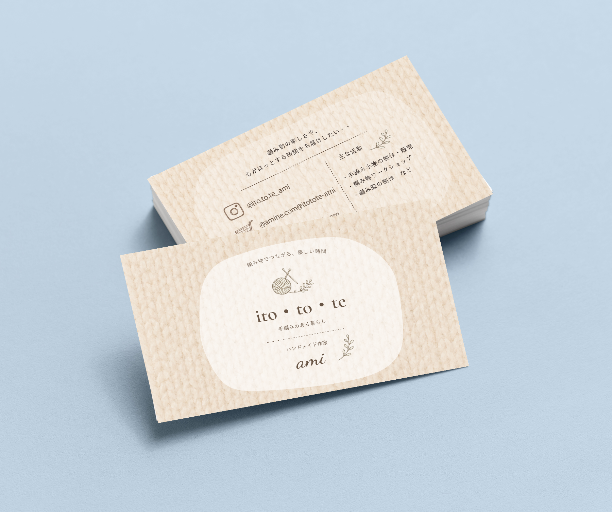

Graphic Design
編み物作家Amiさん（架空）の名刺
編み物作品の販売やワークショップ活動を行う作家様が使用することを想定し制作しました。


- 担当
- デザイン
- 使用ツール
- illustrator Photoshop
- 制作期間
- 3時間
🔍 Observe（課題発見）
必要な情報だけでなく作家さんの温かい人柄も伝わる名刺になるといいなと思いました。
💡 Think（解決策を考える）
手編みの優しさを感じられる素材感や色使いがブランドイメージにつながると考えました。
✨ Improve（より良くする）
編み地の背景と落ち着いた配色で、温もりのある世界観を表現しました。